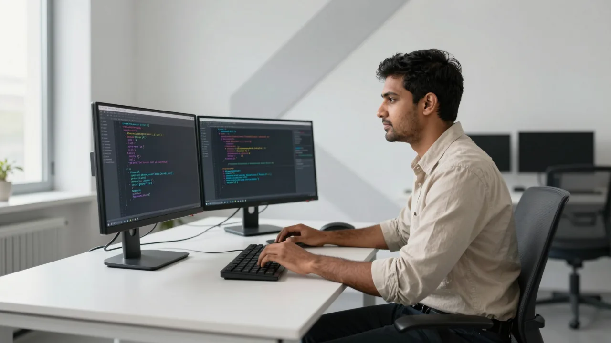

2026 / PlaywrightСерія поповнюється
Читаємо документацію
Playwright
Офіційні docs сторінка за сторінкою: як це працює, чому тести падають і що з цим робити. Від перших локаторів до API, CI та складних сценаріїв.
7 модулів60+ відео у планіАсинхронно
Програма й доступ
Усі кошти з цього курсу — на підтримку Сил оборони. Для ветеранів, ДПСУ та ДСНС — безкоштовно.

Не просто знати API.Розуміти, що відбувається.